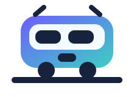
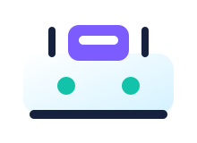
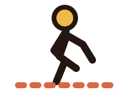
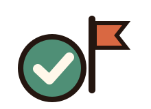

Resumo da rota
Sua viagem
0%
feito
Tempo estimado
—
Linhas
—
Trocas
—
Passo a passo

Escolha as duas estações
Você pode digitar ou escolher qualquer estação cadastrada. Depois, o app mostra o caminho de um jeito fácil de seguir.

Busca por nome da estação
Orientação de troca entre linhas
Progresso salvo no celular